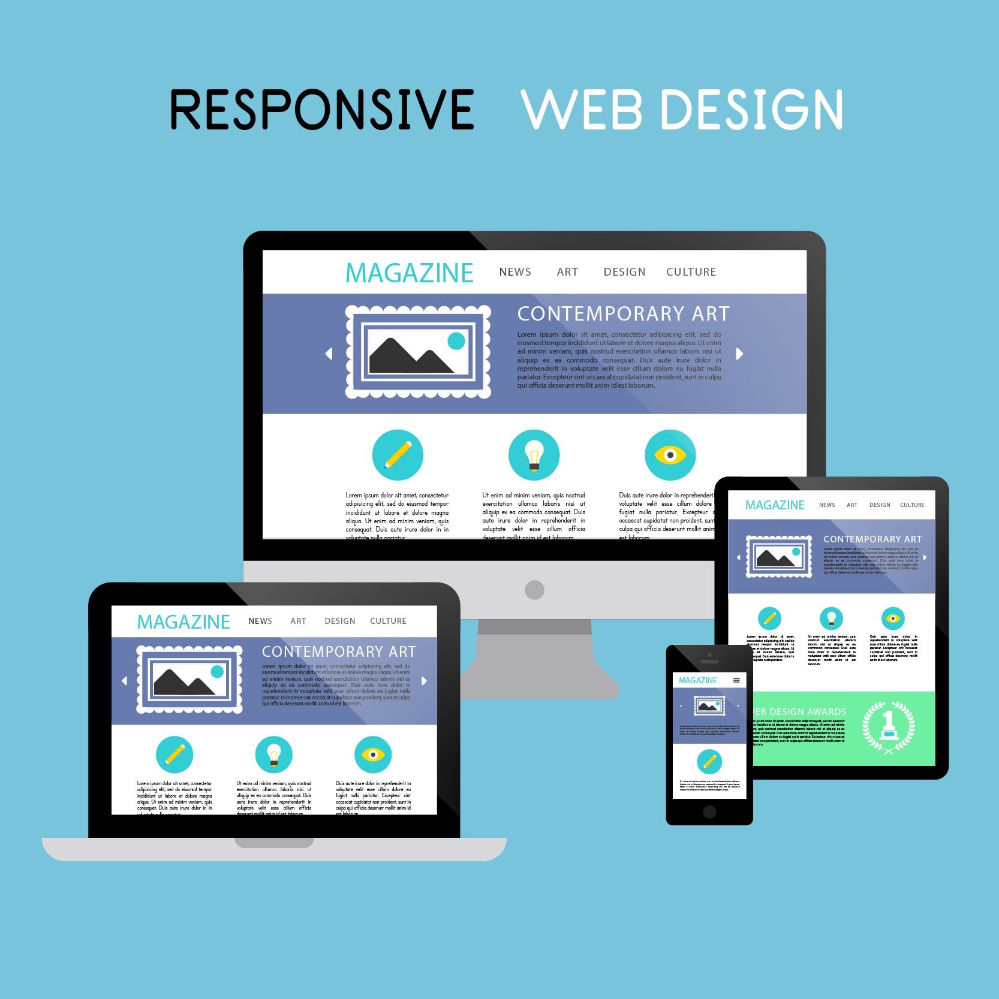

Welcome
To
God'swill Portfolio
I'm a Front-end developer based in Port-Harcourt, Rivers State.
Services
- 
When it comes to custom website design and development leveraging my mastery of HTML/CSS, I craft visually appealing and intuitive layouts that prioritize both aesthetics and usability.
As a React.js specialist, conversant with the vite build system, I build dynamic and interactive web applications that engage users and enhance function. Ensuring consistent performance and functionality across all major browsers and devices.

I optimize website performance using efficient coding practices and manage assets to ensure fast loading times and seamless user experiences. Implementing SEO best practices, I enhance search engine visibility to drive organic traffic.

I design responsive websites that seamlessly adapt to various devices and screen sizes, ensuring accessibility compliance (WCAG) to make web content usable for all.
while Working closely with designers and backend developers, I integrate frontend solutions seamlessly into comprehensive web projects. Using Git for version control, I maintain code integrity and streamline deployment processes.